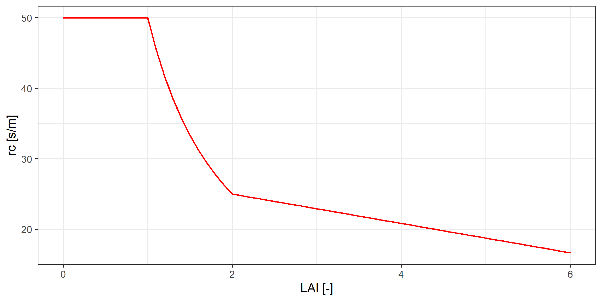

fn_source <- "Q:/HUME/HUME/Components/Evapotranspiration/UPenMonteith.pas"
fn_xml <- "Q:/OSR/Project/OSRGrowth/xml_docu/UPenMonteith.xml"
xml_docu <- read_xml(fn_xml)Class description of TPenMonteith
1 Introduction
The class TPenMonteith calculates the potential evapotranspiration according to the Penman-Monteith equation. The Penman-Monteith equation is a combination of the Penman equation and the Monteith equation. The Penman equation calculates the evaporation from a free water surface, while the Monteith equation calculates the transpiration from a plant. The Penman-Monteith equation calculates the potential evapotranspiration, which is the sum of the evaporation and the transpiration. The potential evapotranspiration is the evapotranspiration that would occur if there were no water limitation.
1.1 Background
Evaporation of a plant canopy depends like dry matter production on the amount of intercepted radiant energy but also on the vapour pressure deficit of the ambient air. One of the most fundamental methods to calculate the evaporation rate of a closed plant canopy is the Penman-Monteith equation (Monteith, 1973):
\lambda E=\frac{s{{R}_{n}}+{{\rho }_{a}}{{c}_{p}}\frac{{{e}_{s}}-{{e}_{a}}}{{{r}_{a}}}}{s+\gamma \left( 1+\frac{{{r}_{c}}}{{{r}_{a}}} \right)} \tag{1} with evaporation E (kg.m-2.s-1), latent heat of vaporisation of water \lambda (J.kg-1), net radiation R_n (W.m-2), total resistance of the pathway between the evaporating sites and the bulk air ra (s.m-1), the canopy resistance r_c (s.m-1), the vapour pressure deficit between the evaporating sites and the bulk air es-ea (hPa), the slope of the vapour saturation curve s (hPa.K-1), the volumetric heat capacity of dry air c_p (J.kg-1), the density of dry air \rho_a (kg.m-3) and the psychrometer constant \gamma (hPa.K-1).
The net radiation R_n is by default computed from the global radiation, GR, using an empirical regression equation derived from measurements of global and net radiation over grass at the experimental field ‘Ruthe’:
{{R}_{n}}=0.6494\cdot GR-18.417 \tag{2}
Potential evaporation is the sum potential transpiration, Tp, potential evaporation, Ep, and of interception evaporation, I:
E{{T}_{p}}={{T}_{p}}+{{E}_{p}}+I \tag{3} Interception evaporation kg.m-2.d-1 is assumed to take place from a storage pool, IP, (kg.m-2) situated on the surface of the canopy. The capacity of this storage pool, CIP, kg.m-2 is calculated from a specific interception capacity, SIC, (kg.m².m-2) and the leaf area index LAI m².m-2.
CIP=SIC\cdot LAI \tag{4}
Interception is the minimum of the sum of the maximum possible change of the interception pool and the precipitation rate, Pr, kg.m-2.d-1 and the potential Evapotranspiration:
I=\min \left( {}^{IP}/{}_{dt}+\min \left( \Pr ,\,CIP-IP \right),\,\,E{{T}_{p}} \right) \tag{5} The change of the storage pool is calculated from the minimum of the precipitation rate and the actual unused capacity of the precipitation pool, CIP-IP:
\frac{dIP}{dt}=\min \left( \Pr ,\,CIP-IP \right)-I \tag{6}
The potential evaporation rate is determined by the fraction of radiation energy which is reaching the soil surface, Rns. This fraction can be calculated using a analogue of the Lambert-Beer law:
{{R}_{ns}}={{R}_{n}}\cdot {{e}^{-{{k}_{G}}\cdot LAI}} \tag{7}
Were kG is the extinction coefficient for global radiation, which has a default value of 0.5. The potential evaporation then gets:
{{E}_{p}}=\left( E{{T}_{p}}-I \right)\cdot \frac{{{R}_{ns}}}{{{R}_{n}}} \tag{8}
Actual evaporation was determined from an empirical function using potential evaporation and the water potential in 10 cm depth as input parameters ((Beese et al., 1978)). The potential transpiration is calculated as the remaining part of the potential evapo-transpiration after subtracting potential evaporation and interception and taking also into account an empirical crop resistance.
1.1.1 Aerodynamic resistance
The aerodynamic resistance depends on wind speed and the height of the vegetation. Under so called stable conditions (canopy temperature equals air temperature) a logarithmic wind profile can be found, i.e. wind speed is linearly related to the logarithm of the height. From the measurement height (z) the wind speed (u) decreases down to zero at a height z_0 which can be found by linear extrapolation on the semi-logarithmic plot of height vs wind speed. The term z_0 is also called the aerodynamic roughness length. It can be approximated by 0.13*h, where h is the crop height [m].
Moneith & Unsworth () are giving the following equation for r_a
{{r}_{a}}=\frac{1}{{{k}^{2}}u}\left( \ln {{\left( \frac{z}{{{z}_{0}}} \right)}^{2}} \right) \tag{9}
where k is the von Karman constant (0.41) and u is the wind speed at height z.
This equation, however, has the problem that when wind speed get very low, values of r_a get unrealistically high. In fact as U \rightarrow 0, r_a \rightarrow \infty and (T_c - T_a) \rightarrow \infty, an unrealistic result. Windspeeds < 1 m s- 1 frequently occur during the course of canopy temperature measurements, a fact that must be accounted for in the calculation of r,. A further complication becomes evident at the lower windspeeds when the measurement of windspeed is considered. The stall speed of many anemometers is relatively large (i.e., 0.5 m s-I), which means that a value of U=0 can be recorded although the air may be moving above the canopy. Even without measurable horizontal wind, air movement takes place within the canopy because free convective conditions exist which results in buoyancy driven, energy containing eddies. Thom & Oliver (1977) suggested a semi-empirical approach for overcoming this problem:
{{\text{r}}_{\text{a}}}\text{=}\frac{\text{4.72 ln}{{\left( \frac{\text{z-d}}{{{\text{z}}_{\text{0}}}} \right)}^{\text{2}}}}{\text{1 + 0.54u}} \tag{10}
where d is the zero plane displacement height, i.e. the height to which plant canopies increase the plane of zero wind speed. The displacement height is according to Monteith 0.63*h, were h is the crop height [m].
The term d thereby is the zero plane displacement height, i.e. the height to which plant canopies increase the plane of zero wind speed. The displacement height is according to Monteith 0.63*h, were h is the crop height [m].
1.1.2 Canopy resistance
The second resistance considered in the Penman-Monteith equation is the canopy resistance. The canopy resistance r_c is in principle the value of the stomatal resistance r_s divided by the “active” leaf area index, assuming that the leaves act independently as emitters of water vapour:
{{r}_{c}}\approx \frac{r_s}{LAI};\,LAI<< \tag{11}
For higher values of leaf area index, however, additional leaves do not decrease the canopy resistance as the first leaves do, i.e. local increase of the vapour pressure of the air by existing leaves reduces the additional transpiration rate of additional leaves.
rc = \begin{cases} rc_0, & \text{if } LAI < 1.0 \\[8pt] \frac{rc_0}{LAI}, & \text{if } 1.0 \leq LAI < 2.0 \\[8pt] \frac{rc_0}{2} - \left(\frac{rc_0}{2} - \frac{rc_0}{3}\right) \cdot \frac{LAI - 2}{4}, & \text{if } 2.0 \leq LAI < 6.0 \\[8pt] \frac{rc_0}{3}, & \text{if } rc \text{ remains undefined} \\[8pt] \end{cases} \tag{12}
For a well watered crop the value of r_s is at around 50 [s.m^{-1}]. The resulting values of r_c plotted against LAI look like shown in Figure 1.

1.2 Descendence
The class TPenMonteith is derived from TPlantRelatedSubMod, which is derived from TSubmodel which is derived from TObject or TGraphicControl.
TPenMonteith |____TPlantRelatedSubMod |____TSubmodel
1.3 State variables
The class TPenMonteith has 1 following state variable(s).
| State variable | Units | InitialValue | Description |
|---|---|---|---|
| int_stor | [mm] | 0 | intercepted water on canopy |
1.4 Parameters
The class TPenMonteith has 7 following parameter(s).
| Parameter | Units | Value | Description |
|---|---|---|---|
| CiThreshold | [ppm] | 380.00 | threshold for CO2 impact on rc0 |
| ELEV | [m] | 25.00 | Heigt above sea level |
| EXK_GLOBRAD | [-] | 0.50 | extiction coefficient for global radiation |
| MEASURE_HEIGHT | [m] | 3.50 | Measurement height [m] |
| RC0 | [s.m-1] | 50.00 | Stomatawiderstand bei guter Wasserversorgung |
| relRc0Inc_CO2 | [(s.m-1)/ppm] | 0.25 | mediates the relative CO2 impact on rc0 estimated from: Elevated CO2 effects on canopy and soil water flux parameters… Burkart et al. 2010 |
| SIC | [mm.m-2.m-2] | 0.15 | specific interception capacity |
1.5 Variables
The class TPenMonteith has 20 following variable(s).
kable(df.var, escape = FALSE)| Variable | Units | Description |
|---|---|---|
| CO2TransDiff | [mm/d] | CO2 induced reduction of pot_trans |
| ET0 | [] | reference evapotranspiration short grass (FAO) |
| interzeption | [mm/d] | daily interception rate |
| k_GlobRad | [-] | actual extinction coefficient for global radiation, can be from parameter or from external crop model |
| NetRad | [W.m-2] | net radiation |
| NetRain | [mm/d] | rain - interception |
| P | [mbar] | air pressure |
| pETP | [] | potential evporation |
| pETP_ambient | [] | potential evapotranspiration ohne CO2 Einfluss |
| pot_Evapo_ambient | [mm/d] | |
| PotEvap | [mm/d] | potential soil evaporation rate |
| PotTrans | [mm/d] | potential plant transpiration |
| potTrans_ambient | [mm/d] | potential transpiration under ambient CO2 |
| ra | [s/m] | aerodynamic resistance |
| rc | [s/m] | canopy resistance |
| rc_ambient | [s/m] | canopy resistance under abient CO2 |
| rc0_ambient | [s.m-1] | rc0 value without CO2 effect |
| rc0_Var | [s.m-1] | rc0 value as used for calculation (from parameter or plant model) |
| relCO2TransDiff | [-] | rel. CO2 induced reduction of pot_trans |
| VapPress | [mbar] | saturated vapour pressure |
1.6 External variables
The class TPenMonteith has 8 following external variable(s).
| External variable | Units | Description | Source |
|---|---|---|---|
| CO2pp | external CO2 concentration | ||
| CropHeight | crop height | OSRGrowth.CropHeight | |
| Rad_int | [W/m²] | gobal radiation | C:_kage_Wetter_Langzeit_1990_2022_Hohenschulen.csv |
| LAI | leaf area index | OSRGrowth.LAI | |
| rain | [mm/d] | rainfall rate | C:_kage_Wetter_Langzeit_1990_2022_Hohenschulen.csv |
| Sat_def | [mbar] | Sättigungsdefizit [hPa] | C:_kage_Wetter_Langzeit_1990_2022_Hohenschulen.csv |
| tmpm | [°C] | average daily temperature | C:_kage_Wetter_Langzeit_1990_2022_Hohenschulen.csv |
| Wind | [m/s] | wind speed | C:_kage_Wetter_Langzeit_1990_2022_Hohenschulen.csv |
1.7 Options
The class TPenMonteith has 4 following option(s).
| Option | Units | Description |
|---|---|---|
| ContOutput | NA | Output every time step? |
| FinalOutput | NA | Output of final values in separate file? |
| optCO2 | NA | Option for including effects of elevated CO2 in calculations |
| ra_Option | NA | Option for ra(u, CropHeight)-function |